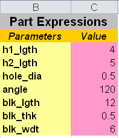
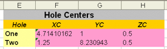
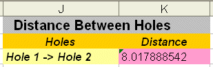

选择工具→电子表格。
这个电子表格中包含实现目标分析与目标搜寻所需的全部表达式。
B 列以及 C 列中包含驱动这个部件的所有关键表达式。

孔中心列中包含两个孔的中心位置。

这个信息是通过使用 POINT 函数，以从部件中获取。
选择电子表格中的单元格 F3。
注意到在电子表格顶部的编辑框中，显示：{ =POINT("hole1")}
在这个函数中，变量 hole1是草图中一个圆弧的名称属性。

选择单元格 K3。
数据列 J 和 K 将计算两个孔之间的距离，这个计算通过函数 DISTPT 来实现。
这个公式将显示在编辑框中：=DISTPT(F3:H3,F4:H4)
用在这个函数中的两个参数，为包含用于计算距离的两个点的 XYZ 坐标的单元格。